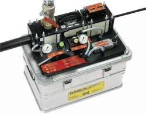
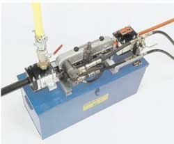

C.E.V. c'est aussi:
-véhicules portes-engins |
-dépanneuses |
-treuils de levage et halage |
-signalisation |

Equipements pour la pose de câbles
de
|
||
|
•EFFICACE •FACILE A UTILISER •RETOUR SUR INVESTISSEMENT RAPIDE •JUSQU'A 20 000 M DE CABLE POSES PAR JOUR •PLUS DE 9000 M POSES EN UNE SEULE OPERATION GRACE AU Flottage Trois équipements légers et ultra-efficaces, à choisir en fonction du diamètre de votre cable : •Microjet (moins de 6 mm)Minijet (entre 4 et 16 mm) •Cablejet (entre 6 et 15 mm) •Superjet (entre 15 et 35 mm) Voir aussi notre gamme d'Accessoires pour ces équipements : •Le Figaro•Le raccord" Y " •Le refroidisseur d'air AHP-400 (AftercoolerF) • Jetting Lube •Raccords et bouchons spéciaux pour tubes •Appareillage de calibrage et de localisation de défaut de conduit •Assistance et Conseils Contactez-nous pour définir l'équipement le mieux adapté à votre chantier. |
La qualité des câbles à fibres optiques et les performances qu'ils offrent varient sans cesse. En revanche, les exigences auxquelles les appareils de pose doivent répondre demeurent inchangées : équipes réduites, faibles contraintes, pose de kilomètres de câble ininterrompu et, avant tout, sécurité et performance de pose élevées. | |
|
Le système Cablejet "sans traction" répond à toutes les contraintes de la pose de câbles moderne. Il maîtrise avec brio aussi bien les tâches de pose d'un réseau de télécommunication ou d'un réseau pour les chemins de fer que la pose d'oléoducs et de gazoducs. Pour la pose de courtes longueurs, il permet d'augmenter la rentabilité et le confort du travail. |
 | |
|
La pose au CABLEJET consiste ? pousser, ? l'aide d'un entra?neur m?canique, un c?ble de t?l?communication ou de transport d'?nergie dans un conduit,dans lequel un fort courant d'air est ?tabli par un compresseur.L'air, qui passe ? grande vitesse, a prise sur la totalit? de la surface du c?ble et facilite sa progression.Le c?ble n'est donc pas tir?, mais pouss? et port?. Il circule ainsi ? l'int?rieur de son conduit, se jouant des ondulations, des changements de direction impos?s, m?me abrupts et fr?quents.L'effort de traction en t?te ?tant inexistant, le c?ble est lib?r? des contraintes inh?rentes aux m?thodes conventionnelles de pose par furet ou c?ble tracteur. Une fois install?, il repose au fond de son conduit, sans aucune tension r?siduelle. Sa long?vit? est prolong?e. L'absence d'efforts et la protection efficace offerte par le conduit sont sources d'?conomies car des c?bles ? structure all?g?e et d?pourvus d'armure de traction peuvent ?tre utilis?s. Le proc?d? CABLEJET permet la pose efficace de grandes longueurs de câbles ? fibres optiques, coaxiaux, multipaires, voire de transport d'?nergie, munis d'un manteau de PE ou ?quivalent, ayant un diam?tre entre 6 et 15 mm. Plac? en cascade, CABLEJET autorise la pose ais?e de c?bles de longueurs quasi infinies. |
||
|

|
LE SUPERJET, ?galement d'un encombrement r?duit, d'un poids de 33 kg, est destin? ? des c?bles de plus grands diam?tres, soit de 15 ? 35 mm. Il peut, moyennant certaines pr?cautions, ?tre utilis? pour installer des c?bles de plus petits diam?tres. Les moteurs hydrauliques entra?nent deux cha?nes rev?tues d'une mati?re synth?tique particuli?rement adh?rente. | |